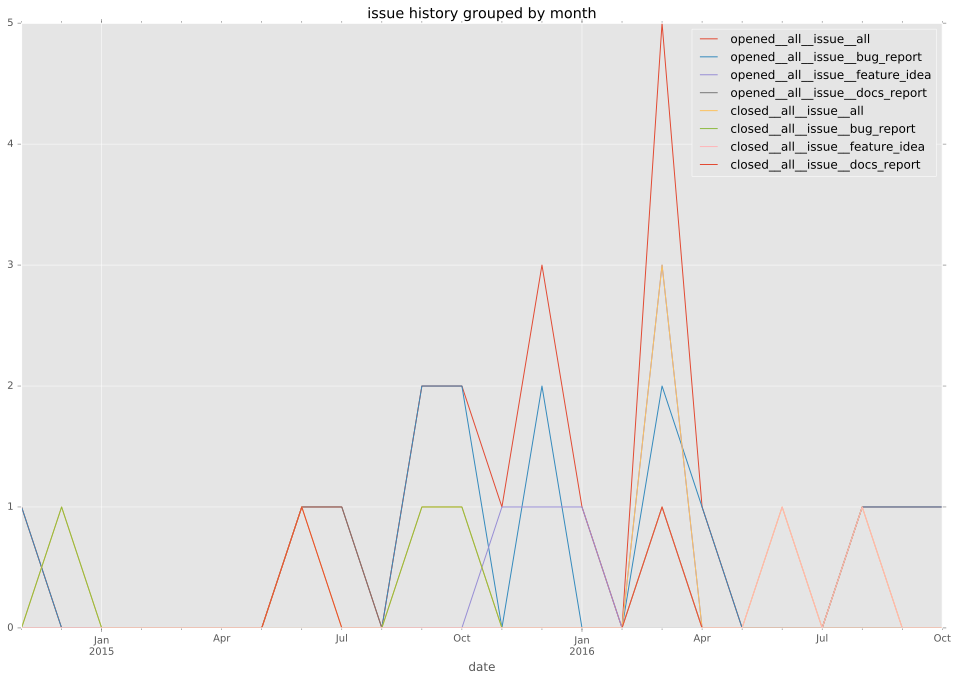
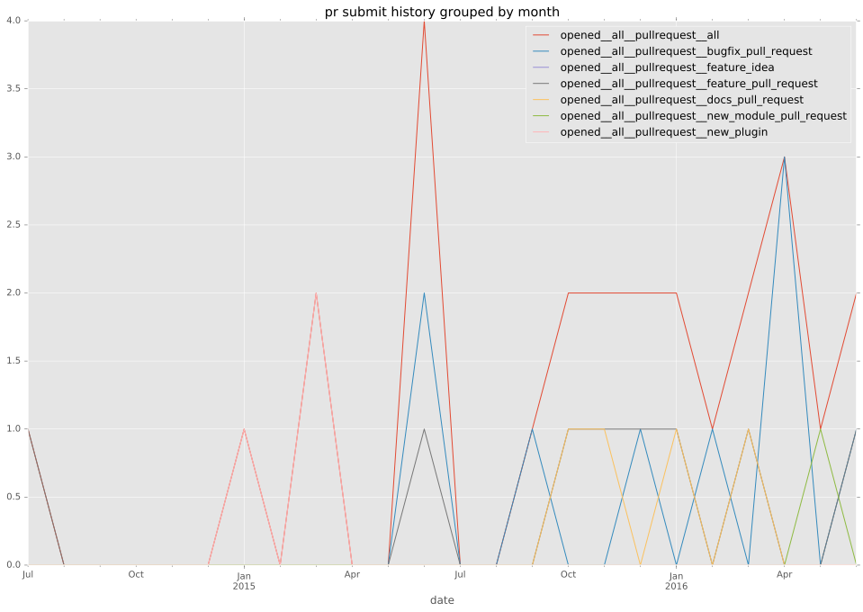
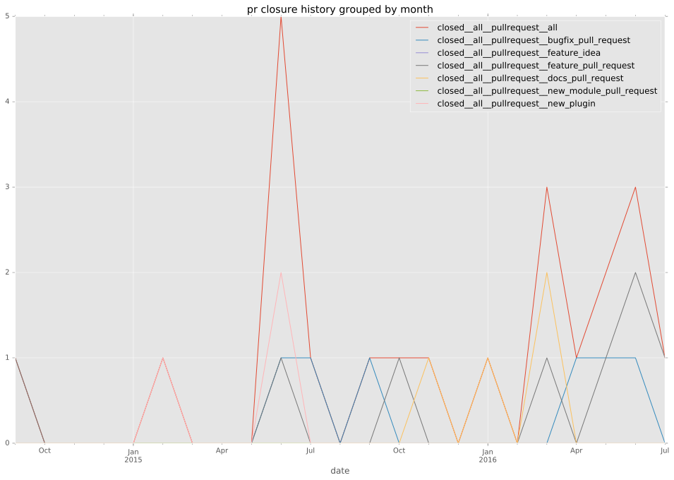

authors
- defionscode
- seiffert
maintainers
- ansible
contributors
- defionscode : 68 commits
- Hypermanzer : 22 commits
- Etherdaemon : 12 commits
- nitzmahone : 10 commits
- ryansb : 5 commits
- toninog : 4 commits
- jsternberg : 4 commits
- gundalow : 4 commits
- bcoca : 3 commits
- wimnat : 2 commits
- willthames : 1 commits
- micxer : 1 commits
- kwoodson : 1 commits
- dennisconrad : 1 commits
- billwanjohi : 1 commits
- abadger : 1 commits
total issue counts
unknown: 1
feature pull request: 8
docs report: 3
pullrequest: 30
docs pull request: 3
bugfix pull request: 16
feature idea: 6
issue: 25
new plugin: 2
bug report: 16
issue history

pullrequest history


days open by issue type
bugfix pull request
count: 22
std: 56.9207887373
min: 0
max: 191
median: 7.0
mean: 31.5
all
count: 55
std: 77.9316155378
min: 0
max: 239
median: 13.0
mean: 57.1818181818
pullrequest
count: 0
std: nan
min: nan
max: nan
median: nan
mean: nan
docs pull request
count: 6
std: 83.0854981329
min: 0
max: 167
median: 13.0
mean: 60.0
docs report
count: 2
std: 168.998520704
min: 0
max: 239
median: 119.5
mean: 119.5
feature pull request
count: 12
std: 91.4215593564
min: 0
max: 224
median: 42.5
mean: 80.4166666667
feature idea
count: 3
std: 38.6953916292
min: 140
max: 208
median: 206.0
mean: 184.666666667
issue
count: 0
std: nan
min: nan
max: nan
median: nan
mean: nan
new plugin
count: 3
std: 48.4974226119
min: 34
max: 118
median: 118.0
mean: 90.0
bug report
count: 6
std: 7.08989891794
min: 1
max: 19
median: 10.5
mean: 9.66666666667
closures grouped by total days open